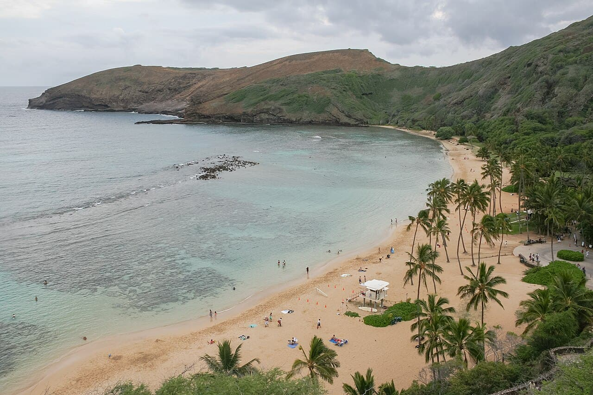

Hanauma Bay
Oahu, Hawaï · snorkeling, baignade

Baie volcanique en croissant, réserve marine protégée : le spot snorkeling le plus célèbre d'Hawaï.
- Lieu
- Oahu, Hawaï
- Niveau
- Débutant
- Activités
- snorkeling, baignade
- Type d'eau
- Mer / océan
- Coordonnées
- 21.27, -157.69 (position approximative du secteur)
Dangers à connaître
- Récif fragile : ne marche pas dessus.
- Quota de visiteurs, réserve en ligne.
Le conseil d'Ocean Buddy
Arrive tôt : l'accès est limité chaque jour.
Ouvrir dans Ocean Buddy Télécharger sur l'App Store
Source : Description historique Ocean Buddy · vérification externe en attente.